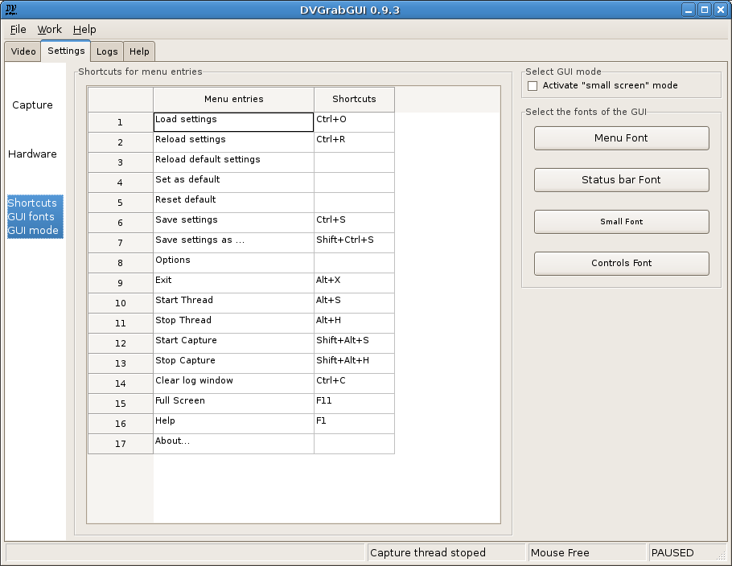

Prev: Reference → Settings → Hardware --- ↑Home
DVGrabGUI 0.9.4
Reference → Settings → GUI
This tab allows you to set the GUI options.

-
Shortcuts for menu entries:
Here you con add/modify shortcuts for the menu entries. The modifier
keys ("Shift", "Ctrl" and "Alt") can be entered with there full names,
or with two chars: "s_" for shift, "c_" for ctrl, and "a_" for alt. The
"real" shortcut might be a letter, a function key ("F1" to "F12"), or
the "enter" key. You can separate them with a blank space, a "-" or a
"+" sign.
Here are some examples: "c_ alt+S" for "Ctrl+Alt+S";
"Alt-s_ f05" for "Shift+Alt+F5"; …
-
Select GUI mode:
Activate "small screen" mode
Check this to enter the "small screen" GUI mode, optimised for 800×600
touchscreens.
-
Select the fonts of the GUI:
These four buttons allow you to change the fonts of the GUI:
-
Menu Font
Should modify the menu font, but this seems not to work with
wxGTK!
-
Status bar Font
To modify the Status bar font…
-
Small Font
To modify the "small font" used in some static informational
texts.
-
Controls Font
To modify the font used by all the controls (static texts,
buttons, …).
Prev: Reference → Settings → Hardware --- ↑Home
(c) 2006, 2007, 2008 Bastien Montagne (montagne29 at wanadoo dot fr).
Project hosted at sourceforge.net/projects/dvgrabgui.